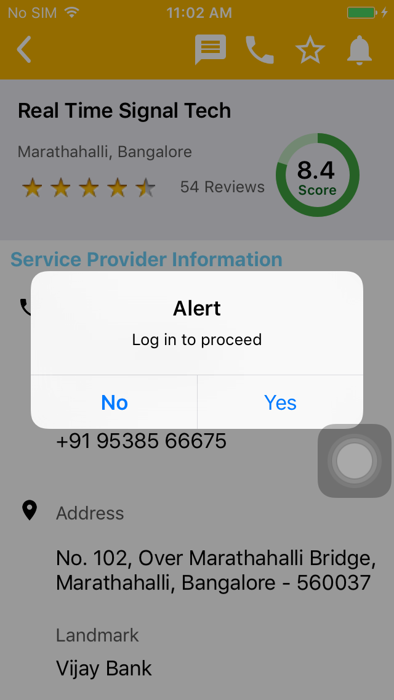

The following table lists down the Sequential Steps during the Run
TestCase Name: browseBusinessListingPage : Iteration 1
Time Taken for Executing: 131 Sec
Current Run Number: Run 0 Method Type: Test Method
TestCase Name: browseBusinessListingPage : Iteration 1
Time Taken for Executing: 131 Sec
Current Run Number: Run 0 Method Type: Test Method
Execution Platform Details
| O.S | : | Mac OS X, x86_64Bit, v10.11.4 |
| Java | : | 1.8.0_65 |
| Hostname | : | Prasannas-MacBook-Pro.local |
| Selenium | : | 2.53.0 |
Summary
| Status | : | Failed |
| Execution Date | : | 01-Aug-2016 11:41:20 |
| Browser | : | , |
Author Info
| Author Name | : | Unknown |
| Creation Date | : | Unknown |
| Version | : | Unknown |
| System User | : | automation |
| S.No | Step Description | Input Value | Expected Value | Actual Value | Time | Line No | Status | Screen shot |
|---|---|---|---|---|---|---|---|---|
| 1 | Search result is successfully displayed | 43 Sec | 194 |  | ||||
| 2 | Call icon is successfully displayed | 42 Sec | 155 | | ||||
| 3 | No sim in the device popup is displayed and handled | 20 Sec | 625 | | ||||
| 4 | Sms icon is successfully displayed | 10 Sec | 161 | | ||||
| 5 | Message popup is successfully displayed | 9 Sec | 164 | | ||||
| 6 | Message popup is successfully displayed with the to field containing business number | 4 Sec | 166 | | ||||
| 7 | Failed | 17 Sec | 183 |  |  |
{kind=link}
Reason for Failure: WebDriver Exception{unicodekeyboard=true, app=/Users/automation/Downloads/IndiaSulekha6.3.2.ipa, networkConnectionEnabled=false, orientation=, noReset=true, bundleId=com.appid.sulekhauserapp, databaseEnabled=false, deviceName=iPhone 5, fullReset=true, platform=MAC, showIOSLog=true, desired={unicodekeyboard=true, app=/Users/automation/Downloads/IndiaSulekha6.3.2.ipa, showIOSLog=true, orientation=, noReset=true, platformVersion=9.3.2, automationName=Appium, bundleId=com.appid.sulekhauserapp, platformName=iOS, udid=2dde13a2961f5f1c6f5a0f737daf13bcb43457ef, deviceName=iPhone 5, fullReset=true}, platformVersion=9.3.2, webStorageEnabled=false, locationContextEnabled=false, automationName=Appium, browserName=, takesScreenshot=true, javascriptEnabled=true, platformName=iOS, udid=2dde13a2961f5f1c6f5a0f737daf13bcb43457ef
Click Me to Show/Hide the Full Stack Trace
org.openqa.selenium.WebDriverException: An unknown server-side error occurred while processing the command. Original error: elementId 14 could not be tapped (WARNING: The server did not provide any stacktrace information)
Command duration or timeout: 1.28 seconds
Build info: version: '2.53.0', revision: '35ae25b1534ae328c771e0856c93e187490ca824', time: '2016-03-15 10:43:46'
System info: host: 'Prasannas-MacBook-Pro.local', ip: '10.10.4.140', os.name: 'Mac OS X', os.arch: 'x86_64', os.version: '10.11.4', java.version: '1.8.0_65'
Driver info: io.appium.java_client.ios.IOSDriver
Capabilities [{unicodekeyboard=true, app=/Users/automation/Downloads/IndiaSulekha6.3.2.ipa, networkConnectionEnabled=false, orientation=, noReset=true, bundleId=com.appid.sulekhauserapp, databaseEnabled=false, deviceName=iPhone 5, fullReset=true, platform=MAC, showIOSLog=true, desired={unicodekeyboard=true, app=/Users/automation/Downloads/IndiaSulekha6.3.2.ipa, showIOSLog=true, orientation=, noReset=true, platformVersion=9.3.2, automationName=Appium, bundleId=com.appid.sulekhauserapp, platformName=iOS, udid=2dde13a2961f5f1c6f5a0f737daf13bcb43457ef, deviceName=iPhone 5, fullReset=true}, platformVersion=9.3.2, webStorageEnabled=false, locationContextEnabled=false, automationName=Appium, browserName=, takesScreenshot=true, javascriptEnabled=true, platformName=iOS, udid=2dde13a2961f5f1c6f5a0f737daf13bcb43457ef}]
Session ID: 3c11f2a3-b557-4c5e-aa21-7b07d20f1f7f
at sun.reflect.GeneratedConstructorAccessor29.newInstance(Unknown Source)
at sun.reflect.DelegatingConstructorAccessorImpl.newInstance(DelegatingConstructorAccessorImpl.java:45)
at java.lang.reflect.Constructor.newInstance(Constructor.java:422)
at org.openqa.selenium.remote.ErrorHandler.createThrowable(ErrorHandler.java:206)
at org.openqa.selenium.remote.ErrorHandler.throwIfResponseFailed(ErrorHandler.java:158)
at org.openqa.selenium.remote.RemoteWebDriver.execute(RemoteWebDriver.java:678)
at io.appium.java_client.DefaultGenericMobileDriver.execute(DefaultGenericMobileDriver.java:51)
at io.appium.java_client.AppiumDriver.execute(AppiumDriver.java:1)
at io.appium.java_client.ios.IOSDriver.execute(IOSDriver.java:1)
at org.openqa.selenium.remote.RemoteWebElement.execute(RemoteWebElement.java:327)
at io.appium.java_client.DefaultGenericMobileElement.execute(DefaultGenericMobileElement.java:46)
at io.appium.java_client.MobileElement.execute(MobileElement.java:1)
at io.appium.java_client.ios.IOSElement.execute(IOSElement.java:1)
at org.openqa.selenium.remote.RemoteWebElement.click(RemoteWebElement.java:85)
at sun.reflect.GeneratedMethodAccessor2.invoke(Unknown Source)
at sun.reflect.DelegatingMethodAccessorImpl.invoke(DelegatingMethodAccessorImpl.java:43)
at java.lang.reflect.Method.invoke(Method.java:497)
at org.openqa.selenium.support.pagefactory.internal.LocatingElementHandler.invoke(LocatingElementHandler.java:51)
at com.sun.proxy.$Proxy10.click(Unknown Source)
at com.test.scripts.BrowseBusinessListing.browseBusinessListingPage(BrowseBusinessListing.java:170)
at sun.reflect.NativeMethodAccessorImpl.invoke0(Native Method)
at sun.reflect.NativeMethodAccessorImpl.invoke(NativeMethodAccessorImpl.java:62)
at sun.reflect.DelegatingMethodAccessorImpl.invoke(DelegatingMethodAccessorImpl.java:43)
at java.lang.reflect.Method.invoke(Method.java:497)
at org.testng.internal.MethodInvocationHelper.invokeMethod(MethodInvocationHelper.java:85)
at org.testng.internal.Invoker.invokeMethod(Invoker.java:659)
at org.testng.internal.Invoker.invokeTestMethod(Invoker.java:845)
at org.testng.internal.Invoker.invokeTestMethods(Invoker.java:1153)
at org.testng.internal.TestMethodWorker.invokeTestMethods(TestMethodWorker.java:125)
at org.testng.internal.TestMethodWorker.run(TestMethodWorker.java:108)
at org.testng.TestRunner.privateRun(TestRunner.java:771)
at org.testng.TestRunner.run(TestRunner.java:621)
at org.testng.SuiteRunner.runTest(SuiteRunner.java:357)
at org.testng.SuiteRunner.runSequentially(SuiteRunner.java:352)
at org.testng.SuiteRunner.privateRun(SuiteRunner.java:310)
at org.testng.SuiteRunner.run(SuiteRunner.java:259)
at org.testng.SuiteRunnerWorker.runSuite(SuiteRunnerWorker.java:52)
at org.testng.SuiteRunnerWorker.run(SuiteRunnerWorker.java:86)
at org.testng.TestNG.runSuitesSequentially(TestNG.java:1199)
at org.testng.TestNG.runSuitesLocally(TestNG.java:1124)
at org.testng.TestNG.run(TestNG.java:1032)
at org.testng.remote.AbstractRemoteTestNG.run(AbstractRemoteTestNG.java:126)
at org.testng.remote.RemoteTestNG.initAndRun(RemoteTestNG.java:137)
at org.testng.remote.RemoteTestNG.main(RemoteTestNG.java:58)